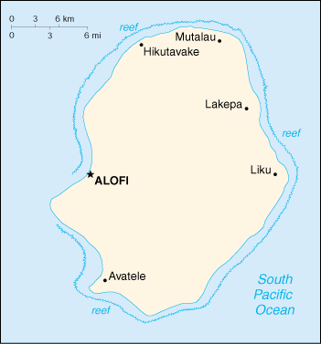

{kind=link}


| Niue (self-governing in free association with New Zealand) |
|
|  | |
| Introduction |
Background: Niue's remoteness, as well as cultural and linguistic differences between its Polynesian inhabitants and those of the rest of the Cook Islands, have caused it to be separately administered. The population of the island continues to drop (from a peak of 5,200 in 1966 to 2,100 in 2000) with substantial emigration to New Zealand.
| Geography |
Location: Oceania, island in the South Pacific Ocean, east of Tonga
Geographic coordinates: 19 02 S, 169 52 W
Map references: Oceania
Area:
total:
260 sq km
land:
260 sq km
water:
0 sq km
Area - comparative: 1.5 times the size of Washington, DC
Land boundaries: 0 km
Coastline: 64 km
Maritime claims:
exclusive economic zone:
200 nm
territorial sea:
12 nm
Climate: tropical; modified by southeast trade winds
Terrain: steep limestone cliffs along coast, central plateau
Elevation extremes:
lowest point:
Pacific Ocean 0 m
highest point:
unnamed location near Mutalau settlement 68 m
Natural resources: fish, arable land
Land use:
arable land:
19%
permanent crops:
8%
permanent pastures:
4%
forests and woodland:
19%
other:
50% (1993 est.)
Irrigated land: NA sq km
Natural hazards: typhoons
Environment - current issues: increasing attention to conservationist practices to counter loss of soil fertility from traditional slash and burn agriculture
Environment - international agreements:
party to:
Biodiversity, Climate Change, Climate Change-Kyoto Protocol, Desertification
signed, but not ratified:
Law of the Sea
Geography - note: one of world's largest coral islands
| People |
Population: 2,113 (July 2000 est.)
Age structure:
0-14 years:
NA
15-64 years:
NA
65 years and over:
NA
Population growth rate: 0.47% (2000 est.)
Birth rate: NA births/1,000 population
Death rate: NA deaths/1,000 population
Net migration rate: NA migrant(s)/1,000 population
Infant mortality rate: NA deaths/1,000 live births
Life expectancy at birth:
total population:
NA years
male:
NA years
female:
NA years
Total fertility rate: NA children born/woman
Nationality:
noun:
Niuean(s)
adjective:
Niuean
Ethnic groups: Polynesian (with some 200 Europeans, Samoans, and Tongans)
Religions: Ekalesia Niue (Niuean Church - a Protestant church closely related to the London Missionary Society) 75%, Latter-Day Saints 10%, other 15% (mostly Roman Catholic, Jehovah's Witnesses, Seventh-Day Adventist)
Languages: Polynesian closely related to Tongan and Samoan, English
Literacy:
definition:
NA
total population:
95%
male:
NA%
female:
NA%
| Government |
Country name:
conventional long form:
none
conventional short form:
Niue
Data code: NE
Dependency status: self-governing in free association with New Zealand; Niue fully responsible for internal affairs; New Zealand retains responsibility for external affairs
Government type: self-governing parliamentary democracy
Capital: Alofi
Administrative divisions: none; note - there are no first-order administrative divisions as defined by the US Government, but there are 14 villages each with its own village council whose members are elected and serve three-year terms
Independence: on 19 October 1974, Niue became a self-governing parliamentary government in free association with New Zealand
National holiday: Waitangi Day, 6 February (1840) (Treaty of Waitangi established British sovereignty)
Constitution: 19 October 1974 (Niue Constitution Act)
Legal system: English common law
Suffrage: 18 years of age; universal
Executive branch:
chief of state:
Queen ELIZABETH II (since 6 February 1952); the UK and New Zealand are represented by New Zealand High Commissioner Warren SEARELL (since NA August 1993)
head of government:
Premier Sani LAKATANI (since 1 April 1999)
cabinet:
Cabinet consists of the premier and three ministers
elections:
the monarch is hereditary; premier elected by the Legislative Assembly for a three-year term; election last held 19 March 1999 (next to be held NA March 2002)
election results:
Sani LAKATANI elected premier; percent of Legislative Assembly vote - NA
Legislative branch:
unicameral Legislative Assembly (20 seats; members elected by popular vote to serve three-year terms; six elected from a common roll and 14 are village representatives)
elections:
last held 19 March 1999 (next to be held NA March 2002)
election results:
percent of vote by party - NA; seats by party - NPP 9, independents 11
Judicial branch: Supreme Court of New Zealand; High Court of Niue
Political parties and leaders: Niue People's Action Party or NPP [Young VIVIAN]
International organization participation: ESCAP (associate), Intelsat (nonsignatory user), Sparteca, SPC, SPF, UNESCO, WHO, WMO
Diplomatic representation in the US: none (self-governing territory in free association with New Zealand)
Diplomatic representation from the US: none (self-governing territory in free association with New Zealand)
Flag description: yellow with the flag of the UK in the upper hoist-side quadrant; the flag of the UK bears five yellow five-pointed stars - a large one on a blue disk in the center and a smaller one on each arm of the bold red cross
| Economy |
Economy - overview: The economy is heavily dependent on aid and remittances from New Zealand. Government expenditures regularly exceed revenues, and the shortfall is made up by grants from New Zealand which are used to pay wages to public employees. Niue has cut government expenditures by reducing the public service by almost half. The agricultural sector consists mainly of subsistence gardening, although some cash crops are grown for export. Industry consists primarily of small factories to process passion fruit, lime oil, honey, and coconut cream. The sale of postage stamps to foreign collectors is an important source of revenue. The island in recent years has suffered a serious loss of population because of migration of Niueans to New Zealand. Efforts to increase GDP include the promotion of tourism and a financial services industry.
GDP: purchasing power parity - $4.5 million (1994 est.)
GDP - real growth rate: NA%
GDP - per capita: purchasing power parity - $2,250 (1994 est.)
GDP - composition by sector:
agriculture:
NA%
industry:
NA%
services:
NA%
Population below poverty line: NA%
Household income or consumption by percentage share:
lowest 10%:
NA%
highest 10%:
NA%
Inflation rate (consumer prices): 1% (1995)
Labor force: 450 (1992 est.)
Labor force - by occupation: most work on family plantations; paid work exists only in government service, small industry, and the Niue Development Board
Unemployment rate: NA%
Budget:
revenues:
$NA
expenditures:
$NA, including capital expenditures of $NA
Industries: tourism, handicrafts, food processing
Industrial production growth rate: NA%
Electricity - production: 3 million kWh (1998)
Electricity - production by source:
fossil fuel:
100%
hydro:
0%
nuclear:
0%
other:
0% (1998)
Electricity - consumption: 3 million kWh (1998)
Electricity - exports: 0 kWh (1998)
Electricity - imports: 0 kWh (1998)
Agriculture - products: coconuts, passion fruit, honey, limes, taro, yams, cassava (tapioca), sweet potatoes; pigs, poultry, beef cattle
Exports: $117,500 (f.o.b., 1989)
Exports - commodities: canned coconut cream, copra, honey, passion fruit products, pawpaws, root crops, limes, footballs, stamps, handicrafts
Exports - partners: NZ 89%, Fiji, Cook Islands, Australia
Imports: $4.1 million (c.i.f., 1989)
Imports - commodities: food, live animals, manufactured goods, machinery, fuels, lubricants, chemicals, drugs
Imports - partners: NZ 59%, Fiji 20%, Japan 13%, Samoa, Australia, US
Debt - external: $NA
Economic aid - recipient: $8.3 million (1995)
Currency: 1 New Zealand dollar (NZ$) = 100 cents
Exchange rates: New Zealand dollars (NZ$) per US$1 - 1.9451 (January 2000), 1.8889 (1999), 1.8629 (1998), 1.5082 (1997), 1.4543 (1996), 1.5235 (1995)
Fiscal year: 1 April - 31 March
| Communications |
Telephones - main lines in use: 376 (1991)
Telephones - mobile cellular: 0 (1991)
Telephone system:
domestic:
single-line telephone system connects all villages on island
international:
NA
Radio broadcast stations: AM 1, FM 1, shortwave 0 (1998)
Radios: 1,000 (1997)
Television broadcast stations: 1 (1997)
Televisions: NA
Internet Service Providers (ISPs): NA
| Transportation |
Railways: 0 km
Highways:
total:
234 km
paved:
0 km
unpaved:
234 km
Ports and harbors: none; offshore anchorage only
Merchant marine: none (1999 est.)
Airports: 1 (1999 est.)
Airports - with paved runways:
total:
1
1,524 to 2,437 m:
1 (1999 est.)
| Military |
Military branches: Police Force
Military - note: defense is the responsibility of New Zealand
| Transnational Issues |
Disputes - international: none